Neutrinosthrough the Earth
Firing the world's most intense neutrino beam 1,300 km through solid rock, from Illinois to South Dakota.
SRC [3]
SCROLL TO BEGIN ↓
Trillionsper second
Solar neutrinos through your body since this page opened:
0
Almost none hit a single atom. So why fire a beam of them through 1,300 km of rock?
NASA ACRIMSAT · measured the Sun's output, 1999–2014
SRC [3] [6] [14]
No charge · no quarks
Weak force only
Original Standard Model: massless. Observed: they change flavour in flight, so they must have mass. First strong evidence: neutrinos made where cosmic rays hit the upper atmosphere (Super-Kamiokande, 1998).
NASA AIM · studies the upper atmosphere
SRC [3] [14]
Fermilab_→_SURF
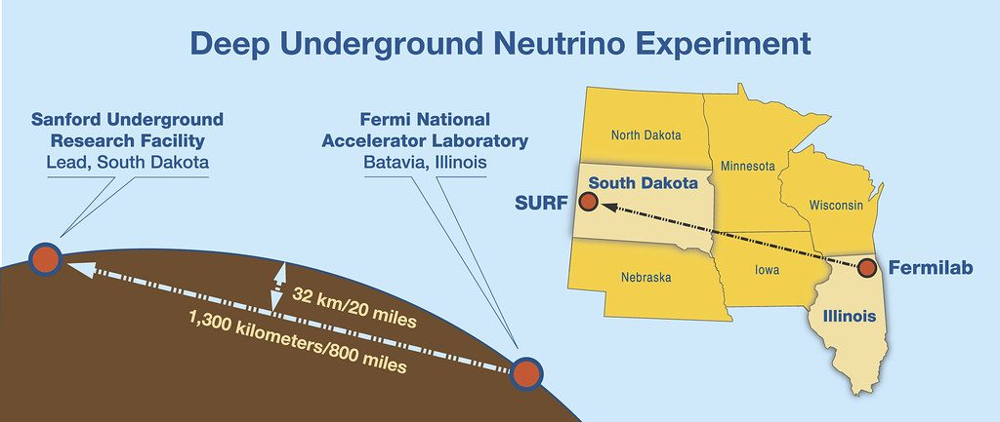
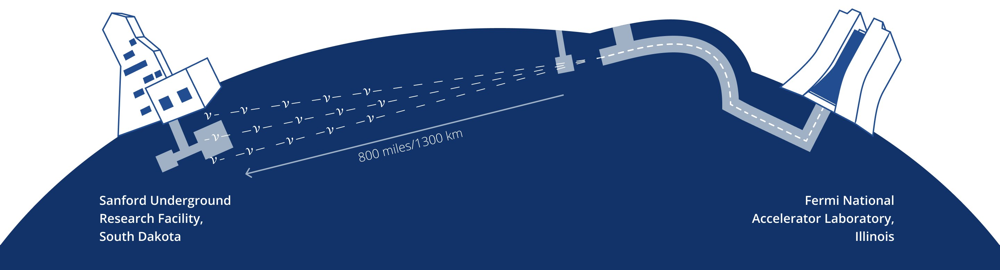
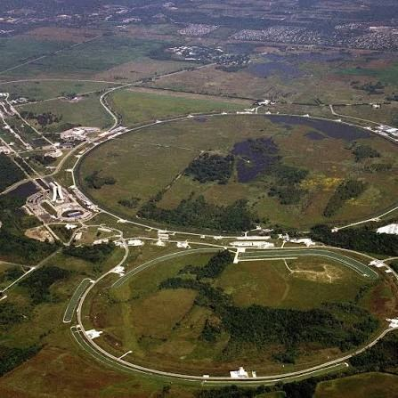
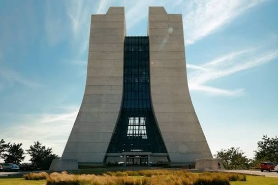
Exact baseline 1,285 km, rounded to 1,300. A straight chord through the curved Earth: deepest point ≈32 km down. No tunnel.
SRC [1] [3] [8]
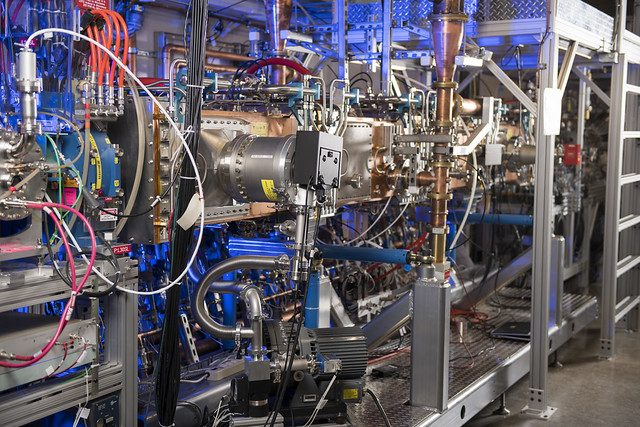
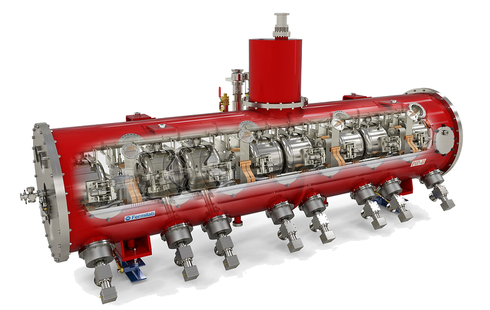
Linac 0.8 GeV → Booster 8 GeV
→ Main Injector 120 GeV
Beam power >1 MW, upgradeable to 2+ MW
Images: Fermilab · PIP-II cryomodule render and accelerator front end
SRC [6] [7]
Beamline
[ TASK 6(A) ]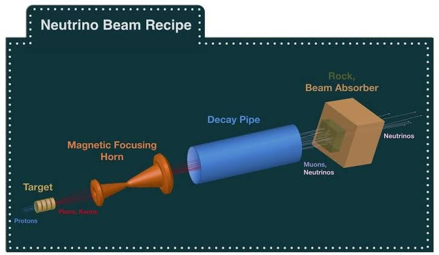
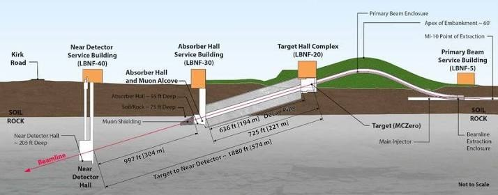
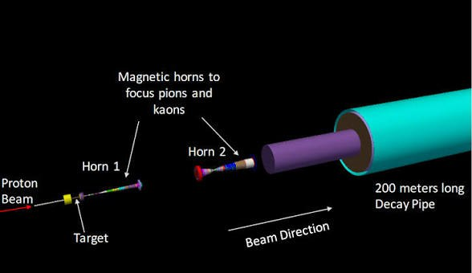
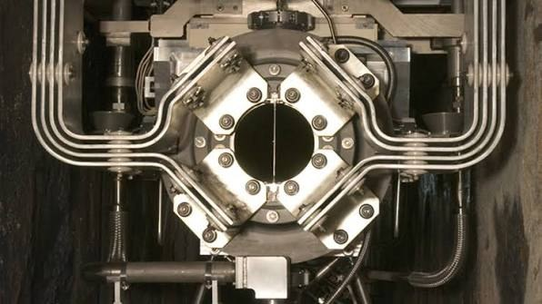
The recipe: protons → target → pions and kaons → horn focuses them → decay pipe → only neutrinos pass the absorber.
SRC [7] [9] · LBNF beamline layout
P(νμ oscillates away) at 1,300 km = 100%
P = sin²(2θ)·sin²(1.27·Δm²·L/E)
Δm² ≈ 2.5×10⁻³ eV² · L km · E GeV
First maximum: 1.27·Δm²·L/E = π/2, so L/E ≈ 495 km/GeV. At 1,300 km: E ≈ 2.6 GeV.
Blue: νμ survives · gold: νμ has oscillated away · white line: 1,300 km · track spans 0–2,600 km
SRC [4] [8] [14]
Charged_current
The outgoing lepton names the flavour: a μ⁻ means a νμ arrived; an e⁻ means a νₑ arrived.
SRC [14]
Ionisation
Drift
Wires give 2 coordinates · drift time × drift speed gives the 3rd · 500 V/cm over 3.5 m: ~1.5 mm/µs, ~2.4 ms · cathode at −180 kV
SRC [5]
ProtoDUNE_@_CERN
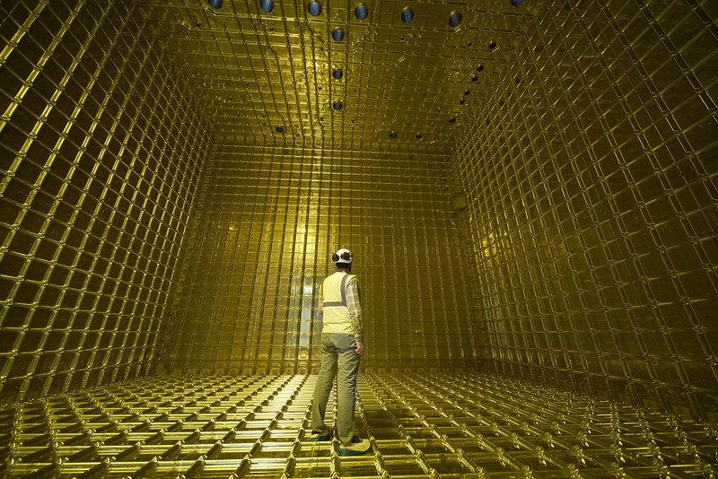
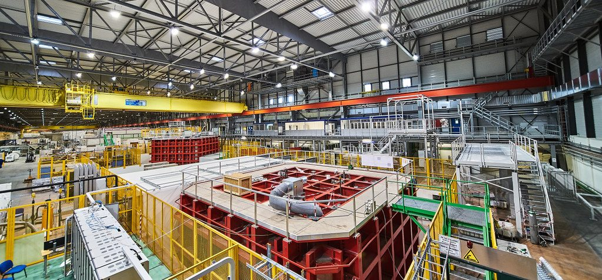
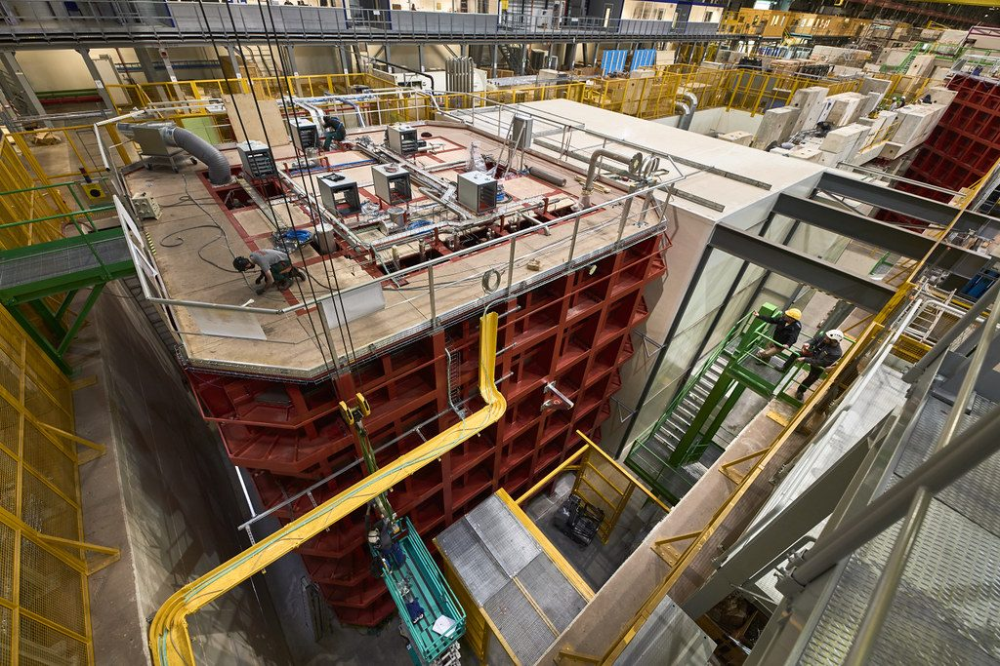
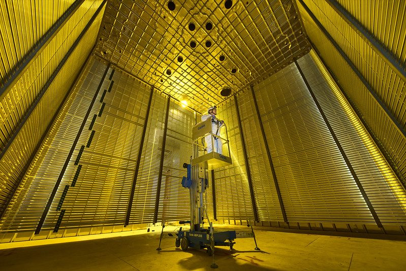
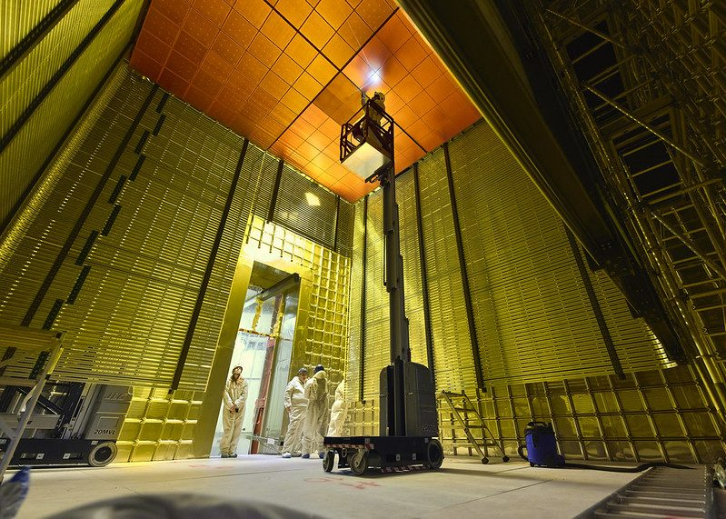
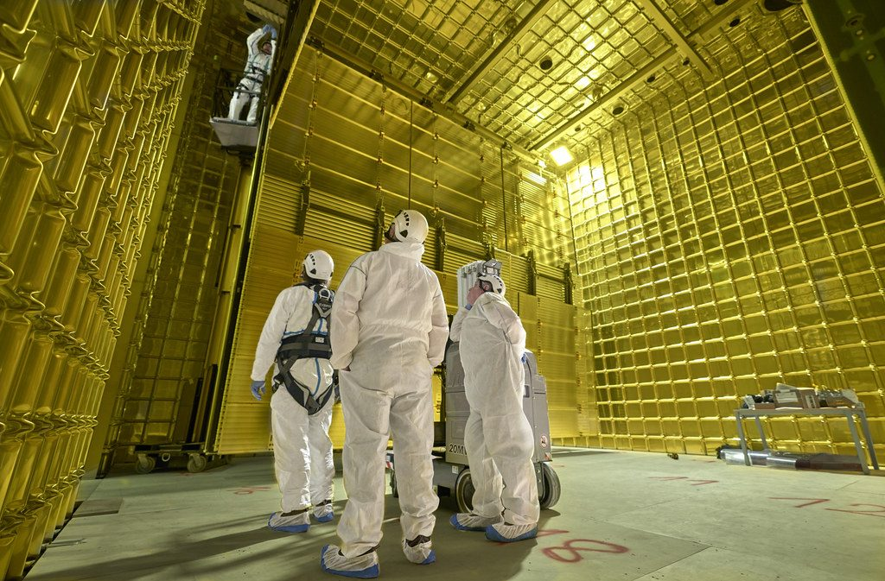
Inside a ProtoDUNE cryostat before filling. One person for scale.
SRC [1] [7]
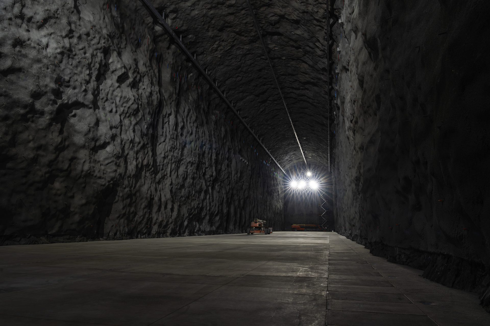
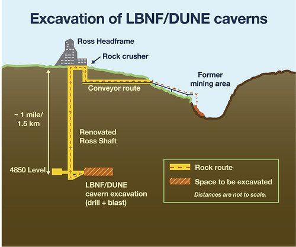
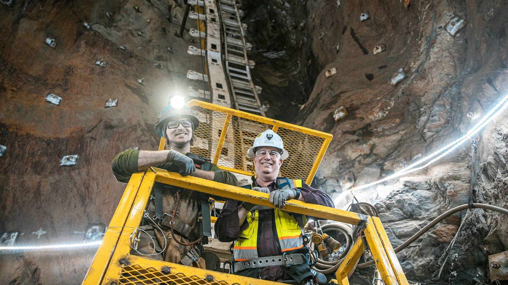
Rock went up the Ross Shaft, ~1.5 km, to the surface.
// 1.5_km_down
Cosmic-ray muons: ~1 per cm² per minute at the surface. 1.5 km of rock cuts that by a factor of millions. Neutrinos pass straight through.
A real DUNE cavern, 4,850-ft level, Sanford Lab · excavation completed 2024
SRC [6] [10] [11]
Beam: oscillations · δ_CP · mass ordering
No beam: proton decay · supernova neutrinos
Gold box: total argon. Blue dashed box: fiducial volume. Only events inside it count for precision physics.
SRC [2] [4] [5] [12]
Far_site
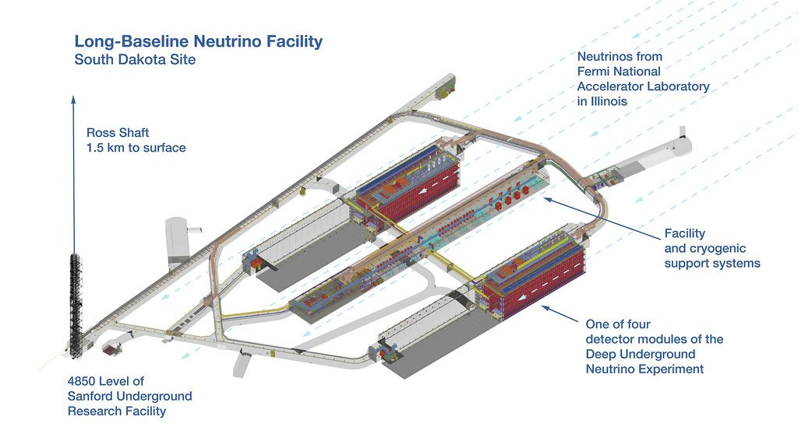
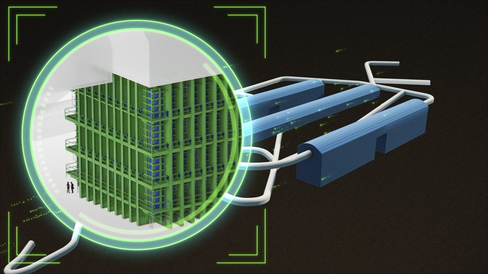
4850 level: two detector caverns, two modules each, plus a central cavern for cryogenics. Ross Shaft: 1.5 km to the surface.
SRC [6] [7] [10]
Path_to_science
We are here: 2026, detector construction starts in the caverns. First detector operating: 2029.
SRC [6] Fermilab DUNE fact sheet
Near_detector
[ TASK 6(C) ]Counts = flux × cross-section × efficiency. Measure them 574 m from the target, before oscillation, and shared uncertainties cancel in the near–far comparison.
SRC [8] [9]
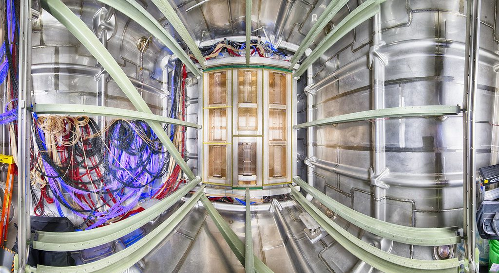
35 modules, each 1×1×3 m · ~67 t fiducial
Pixel readout ≲4 mm · >14 million channels
PRISM: moves up to 28.5 m off-axis (2.8°)
~100 interactions per 1.2 MW beam spill. Only true 3D pixel images can pull them apart.
Photo: prototype argon modules in a test cryostat · facts: DUNE ND talk, NEAT workshop, May 2025
SRC [8] [9]
Matter_≠_CP
Earth has electrons, not positrons, so matter alone treats νₑ and ν̄ₑ differently. A difference is not automatically CP violation.
Blue: ν beam · gold: ν̄ beam · x: energy 0.5–6 GeV · y: νₑ appearance · illustrative shapes
SRC [4]
Expected_results
5σ = discovery: about a 1-in-3.5-million chance of a fluke. Projections, not results yet. No experiment can cover 100% of δ_CP: at 0 or π there is no CP violation.
SRC [4] DUNE FD Interim Design Report Vol. 1, Table 2.1
Rings_vs_tracks
[ TASK 6(D) ]Hyper-K: 295 km, ~0.6 GeV, 260 kt water, ~40,000 PMTs. Light only if v > c/n: slow particles invisible; π⁰ can mimic e⁻. Small matter effect: cleaner CP. Aims to start 2028.
DUNE: 1,300 km, ~2–3 GeV, liquid argon. Every charged track in 3D; tells e⁻ from γ. Needs ultra-pure argon at −184 °C (−300 °F). Big matter effect: mass ordering.
SRC [13]
// Why_1300_km
Distance → tunes a few-GeV beam to the first oscillation maximum
Earth's matter → reveals the mass ordering, if not mistaken for CP
Rock overhead → shields the far detector from cosmic muons
Scale: Earth is 12,742 km across. The 1,285 km chord dips only about 32 km below the surface.
SRC [2] [3]
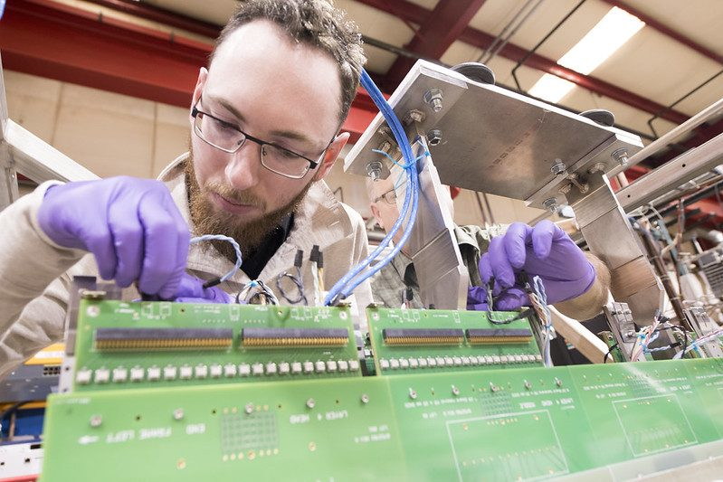
1,500+ scientists
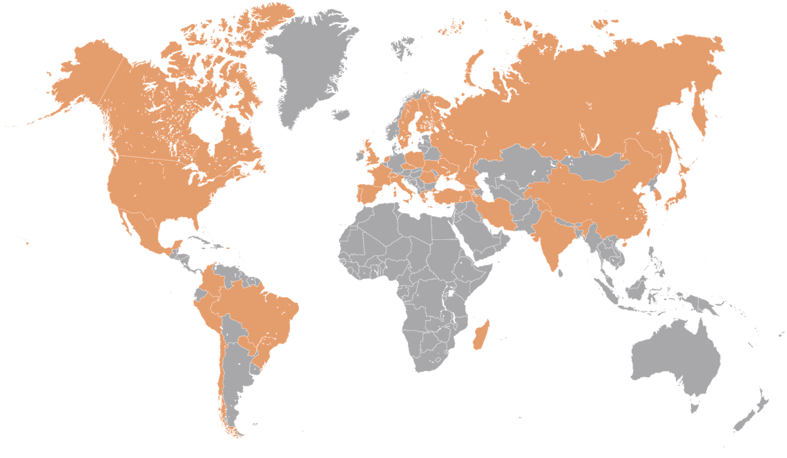
35+ countries
200+ institutions · orange: participating countries (map supplied by DUNE; membership changes over time)
SRC [2] [6]
Sources
- [1]DUNE Collaboration. DUNE: Deep Underground Neutrino Experiment. www.dunescience.org/
- [2]Fermilab LBNF/DUNE. Technology highlights and capabilities. lbnf-dune.fnal.gov/about/technology-highlights-and-capabilities/
- [3]Fermilab LBNF/DUNE. Project overview. lbnf-dune.fnal.gov/about/overview/
- [4]DUNE Collaboration (2018). The DUNE Far Detector Interim Design Report, Vol. 1: Physics, Technology & Strategies. FERMILAB-DESIGN-2018-02. cds.cern.ch/record/2632820/files/fermilab-design-2018-02.pdf
- [5]DUNE Collaboration (2018). The DUNE Far Detector Interim Design Report, Vol. 2: Single-Phase Module. arXiv:1807.10327. arxiv.org/abs/1807.10327
- [6]Fermilab. Deep Underground Neutrino Experiment fact sheet. news.fnal.gov/wp-content/uploads/dune_fact_sheet.pdf
- [7]Fermilab LBNF/DUNE. How it works: neutrino beam; detectors and computing; milestones. lbnf-dune.fnal.gov/how-it-works/neutrino-beam/
- [8]K. Wood for the DUNE Collaboration (2025). The DUNE Near Detector. NEAT Workshop, Colorado State University, 29 May 2025 (slides).
- [9]DUNE Collaboration (2025). DUNE: science and status. arXiv:2502.08493. arxiv.org/abs/2502.08493
- [10]Brookhaven National Laboratory (2024). Excavation of colossal caverns for Fermilab's DUNE experiment completed; Fermilab (2026). Largest neutrino experiment in the US wins Project of the Year award. www.bnl.gov/newsroom/news.php?a=121696
- [11]Sanford Underground Research Facility. The Davis experiment; Our story. sanfordlab.org/experiments/davis-experiment
- [12]DUNE Collaboration (2021). Supernova neutrino burst detection with DUNE. arXiv:1910.11068. arxiv.org/abs/1910.11068
- [13]ICRR, University of Tokyo. Hyper-Kamiokande: outline. www-sk.icrr.u-tokyo.ac.jp/en/hk/about/outline/
- [14]Standard physics and history: Pauli (1930); Cowan & Reines (1956); Super-Kamiokande (1998); Nobel Prizes 2002 and 2015; OPERA (2011); KATRIN (2025); Particle Data Group pion lifetime.
IMAGES: NASA (Blue Marble, ACRIMSAT, AIM models) · Fermilab / LBNF-DUNE · CERN · Sanford Underground Research Facility
The rock is part of the instrument.
[ LBNF-DUNE.FNAL.GOV ]Under construction · not yet taking beam data · Group 4, A-Level Physics
Images and models: NASA (Blue Marble, ACRIMSAT, AIM) · Photos and diagrams: Fermilab, LBNF/DUNE, CERN, Sanford Lab · Facts: DUNE FD Interim Design Report (2018), DUNE ND talk (2025)